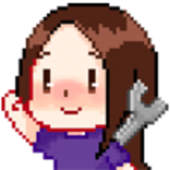

Twitch
Kappa
Kappa is an all purpose emote. It can be used to express extreme frustration and anger, sadness, happiness, joyfullness, or even constipation. It's best to use this emote when you can't use your brain or think up a unique thought as a human being.
PogChamp

PogChamp, also known as Pog, Champ, ChampPog, Pogger, Poog, Pug, Pugger, Nub, Newb, Anubis, and ChomperMcFlompCakes, is a very potent emote. It can level entire skyscrapers with a single copy pasta, and has ended the lives of thousands of memers.
VoHiYo
In all honesty, I used to think that Japanese people said "Ohio". Boy was I wrong. VoHiYo is an adorable emote to add to your collection. It's great for greeting people, great for pissing them off, and great for when you just want to say hi.